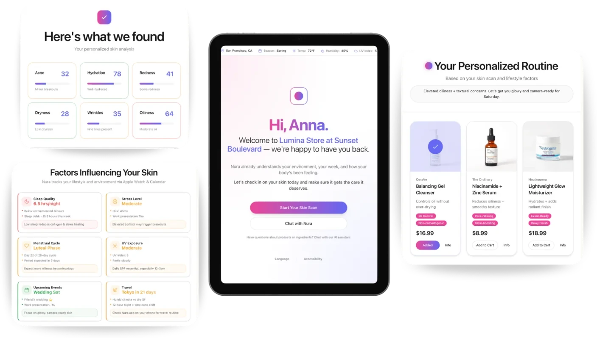

Nura · Project
A countertop device that reads your skin and formulates fresh skincare.
Nura scans your skin before each session, adds signals like sleep and stress if you opt in, and layers a fresh dose from eight sealed active cartridges and two bases. I designed it end to end, from 100+ interviews through industrial design, the companion app, and the computer vision that measures skin in 3D.
- 100+user and expert interviews behind the requirements
- 8 + 2sealed active cartridges and bases
- 5skin layers measured against your own baseline
- ~1Mprimitives in the 3D skin reconstruction
The idea
Skin changes with seasons, stress, your cycle, travel, and sleep, but traditional skincare commits to one formula before it ever reaches you. Nura keeps its components separate, so what you put on your skin can change when your skin does.
Today the computer vision runs end to end on real captures, and the device is designed through industrial design, mechanical layout, schematics, and a preliminary bill of materials. A working prototype comes next.
How it works
What I did
100+ interviews
User and expert interviews defined the requirements, user flows, and interaction design for the device UI and app.
Industrial design to BOM
I led the industrial design, mechanical architecture, schematics, and preliminary bill of materials for the device and its cartridge system.
A companion that personalizes
I designed and built the app, from UX flows to UI and design system, personalizing routines from HealthKit biomarkers (sleep, stress, HRV), environmental data, and skin scans.
Measured against your own skin
I built the vision pipeline: structure from motion, a ~1M-primitive 3D reconstruction, a canonical skin map, and five skin layers measured against your own baseline.
System
A session, about 90 seconds
The sensing and the dispensing sit in one object. Fixed illumination and a fixed focal distance make each session comparable with the last, and the formula can change the same day the skin does.
- ~90 sa full session: scan, dispense, apply
- <45 dBwhile dispensing, measured at one meter
- 8 + 2sealed active cartridges and bag-in-box bases
- ±1%documented accuracy of the pump class, to be measured on Nura's own fluid path
Hardware and fluidics
Eight sealed, syringe-style cartridges sit in a Geneva-indexed rotary drum driven by a stepper. One ceramic piston, shared across all eight positions, dispenses whichever cartridge is at the station. A second ceramic piston with a selector valve draws from two collapsing bag-in-box pouches, a serum and a moisturizer.
There is no mixing chamber and no shared standing fluid path. The base goes into the bowl first, then each active in an order the firmware sets for compatibility, and the user blends with their fingertips, the way people already layer serums.
| Option | Assessment | Decision |
|---|---|---|
| Ceramic piston | Seal-less, handles roughly 100 to 50,000 cP without shearing emulsions, about ±1% over 100M+ cycles, stepper-driven at 35 to 45 dB. | Selected |
| Gear pump | Shears emulsions, so it can't handle cream or serum viscosities. | Excluded |
| Peristaltic | Tubing fails within roughly 500 to 2,000 hours, so it would need several replacements over five years. | Excluded |
| Solenoid or diaphragm | Limited to around 1,000 cP, too thin for the moisturizer base. | Excluded |
| Pneumatic | Compressor noise rules it out for a bathroom counter. | Excluded |
A fourfold margin
Twice-daily use adds up to about 22,000 cycles over the device's life, against 100M+ documented cycles for the pump class.
Tracked without tags
The piston encoder records plunger travel per actuation, so firmware knows what is left in every slot. The app warns at 20% and prompts a reorder around day 28.
A closed fluid path
Sealed single-use cartridges, pouches that never admit air, 50 to 100 µL of suckback at the end of each stroke, recessed nozzles, and keyed collars that only fit the right slot.
A wand and a face camera
The wand carries macro optics, white and UV light behind a cross-polarized filter, and a capacitive moisture ring, over BLE. A full-face camera sits behind a physical shutter.
How the vision pipeline reads skin
The aim is comparable measurement over time. Seven ordinary computer vision stages put every capture of a face into the same coordinate system, so two captures can be compared patch by patch. The pipeline runs end to end on real captures, locally, with nothing uploaded.
Five regional layers
Redness, pigmentation, fine lines, under-eye, and texture, each in its own color space and spatial scale so shadows, highlights, and skin grain don't score. Each is read against the face's own median, so it holds across skin tones.
Proposal and scoring kept apart
A generous multi-scale proposal on redness and darkness channels, then a small, strongly regularized model trained on human labels. Four classes: acne, post-acne mark, pore, and nothing. Pores are the hard case.
Labels from people
A local labeling tool works on the flat skin map or the 3D reconstruction, since a mark can be invisible on one and obvious on the other. Every reported number is out-of-fold under stratified cross-validation across seeds.
Comparative by design
Moisture and sebum are read physically at the wand tip. What you see compares today with your own previous sessions, with no 0-to-100 skin score.
Dosing and safety
Machine learning lives only in the personalization layer. Dosing is deterministic and enforced in firmware, so the model recommends inside limits it cannot exceed, and a scale under the bowl checks every session.
| Failure mode | Mitigation |
|---|---|
| Wrong dose from the model | Deterministic rule engine, firmware ceilings, and a weight check every session. |
| Dose volume off specification | Dispense testing on a physical prototype before the bill of materials is frozen. |
| Allergy missed | A hard exclusion set at onboarding, with no override. |
| Wrong cartridge in a slot | Keyed collars, plus an identity check when a cartridge goes in. |
| Drips or clogs between sessions | Suckback, recessed tips, a parked platen, and accelerated cycling tests for every formulation class. |
| Actives degrading | Stabilized derivatives, opaque sleeves, and a 90-day firmware expiry. |
| Scan data exposure | On-device processing wherever possible, explicit consent, and a defined retention policy. |
Each mitigation is designed in and still needs validation on a physical prototype.
Stack and techniques
- Reconstruction
- Structure from motion, a differentiable 3D model of ~1M primitives, on Apple Silicon
- Skin map
- Canonical face mesh with a fixed UV layout in millimeters, texture atlas at ~0.07 mm per texel
- Detection
- Multi-scale lesion proposal, a small regularized scoring model
- Firmware
- Deterministic dosing rules, encoder-based inventory, 90-day cartridge expiry
- Fluidics
- Ceramic piston pumps, a Geneva-indexed drum on a stepper, a selector valve, bag-in-box bases
- Sensing
- BLE wand with macro optics, white and UV light, a cross-polarized filter, a capacitive moisture ring
- Verification
- A scale under the bowl platen
- App inputs
- HealthKit (sleep, stress, cycle), UV index, air quality, humidity
- Metric reconstruction: device motion synced to the frames, and a 6-DoF pose for every frame.
- Canonical parameterization: the same square millimeter of skin is addressable in every capture.
- Best-view texturing: each triangle from its sharpest, most frontal frames, with lighting separated from color.
- Measurement on the atlas: each patch of skin appears once, so nothing is counted twice across views.
- Lifting to 3D: template matching and triangulation, with sub-2-pixel median placement.
- Self-referenced layers: each read against the face's own median or a reference region.
- Out-of-fold evaluation under stratified cross-validation across multiple seeds.
- A deterministic safety layer, with ML confined to recommending inside it.
- Gravimetric verification of each session's dispensed mass.
Earlier iteration
Before the countertop device, I built Nura for retail: an in-store diagnostic that scored skin with computer vision, read lifestyle factors, and generated a routine on the spot, plus a dashboard that turned those signals into insights for store teams.

What I learned
AI works best when the experience feels human.
People trust a diagnostic when they feel guided and understood. Designing warmth and clarity into the flow mattered as much as model accuracy.
Personalization lives beyond the model.
The best recommendations come from combining vision, lifestyle, environment, and behavior into one system. The intelligence emerges from how those pieces interact.
Check what a good score is measuring.
An earlier, better-looking score turned out to be reading a shortcut in a biased label set, so I discarded it. Several plausible features and one whole 3D layer were built, measured, and pulled when the data didn't support them.
Labels are the binding constraint.
The learning curve is still climbing as labels are added, while swapping the model class moves results less than seed-to-seed noise. More labeled positives help more than a bigger model.
Next project